Results captured from the real Flask app at http://127.0.0.1:5000 · ngspice 41 · Browser + unittest + Impeccable
B1–B7 PASSB8 narrow PASS68 tests OKphone emulation NOT RUNdemo model
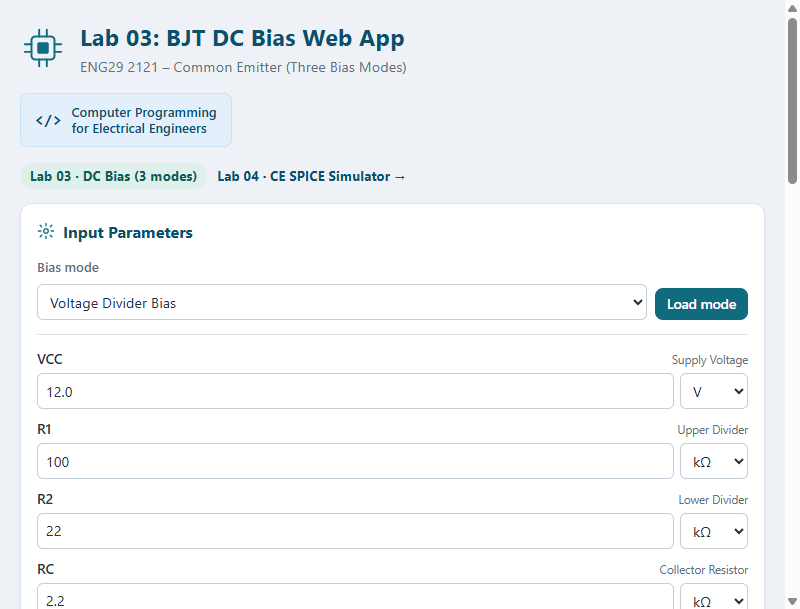
B1 · Lab 03 Divider (regression)VB 1.94 V · VE 1.24 V · VC 9.29 V · VCE 8.05 V · IC 1.23 mA
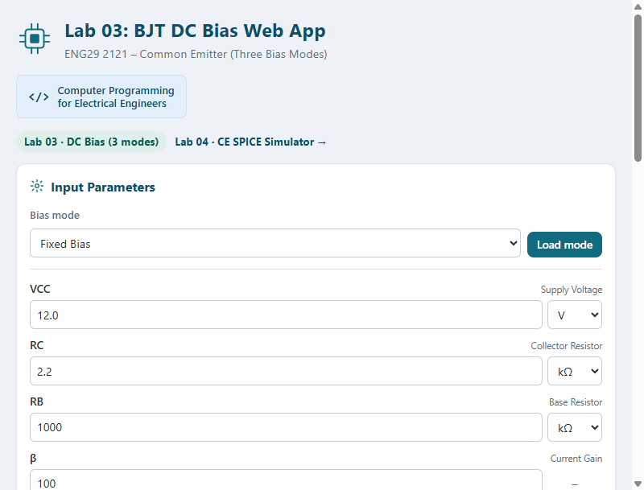
B1 · Lab 03 Fixed (regression)VB 0.70 V · VE 0.00 V · VC 9.51 V · VCE 9.51 V · IC 1.13 mA
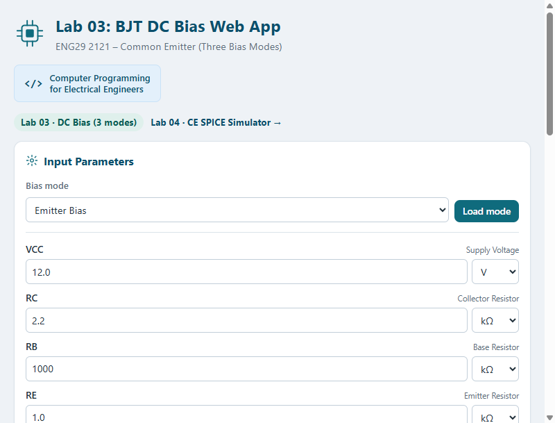
B1 · Lab 03 Emitter (regression)VB 1.74 V · VE 1.04 V · VC 9.74 V · VCE 8.71 V · IC 1.03 mA
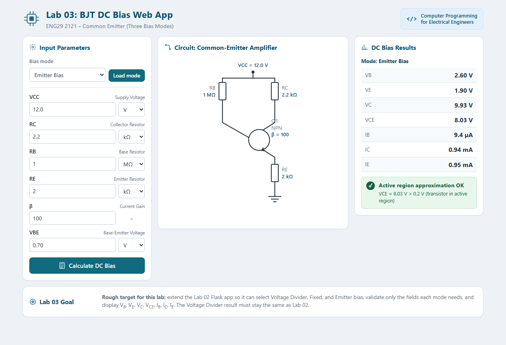
A4 · Lab 03 Emitter, RE = 2 kΩIC ลดลงเป็น 0.94 mA · VCE 8.03 V
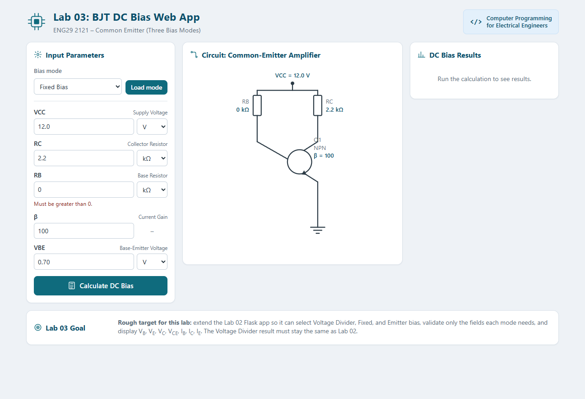
A5 · Lab 03 RB = 0 validationMust be greater than 0. · ไม่มีตารางผลค้าง
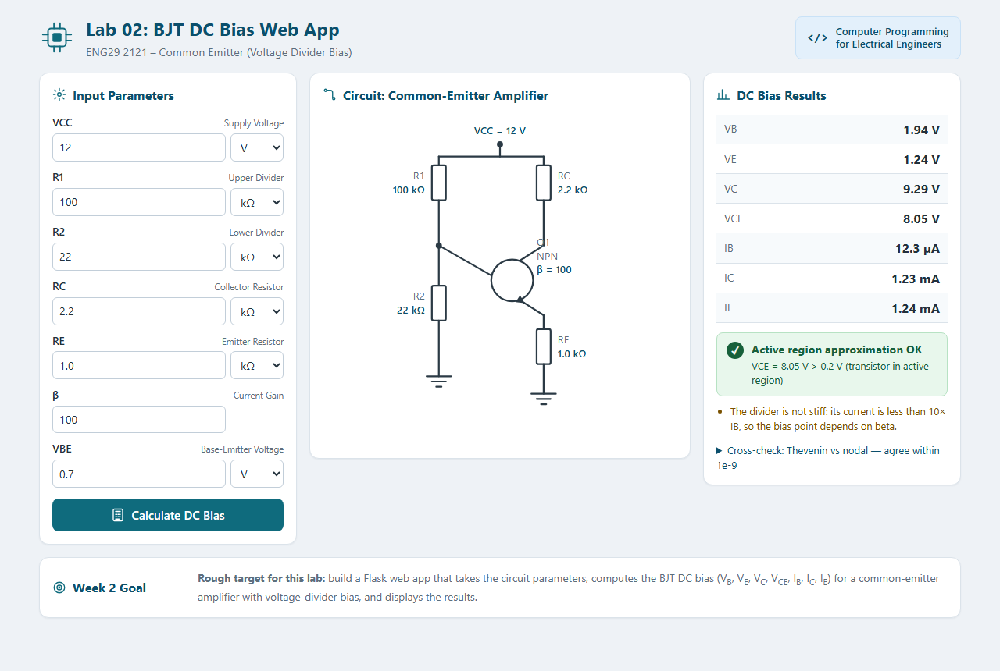
Lab 03 · Active region exampleVoltage divider bias, VCC 12 V
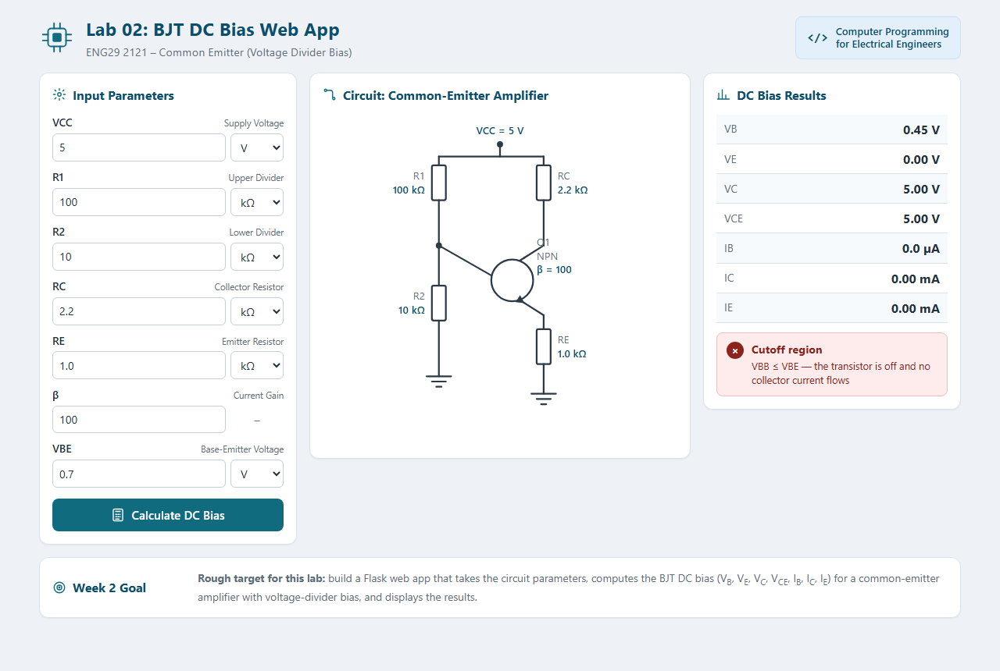
Lab 03 · Cutoff region exampleVBB ต่ำกว่า VBE
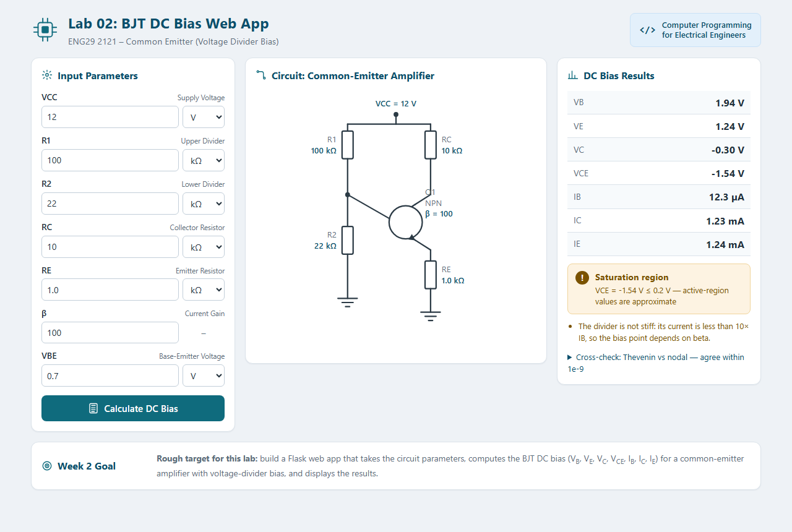
Lab 03 · Saturation region exampleVCE ติดลบ · แสดงคำเตือน
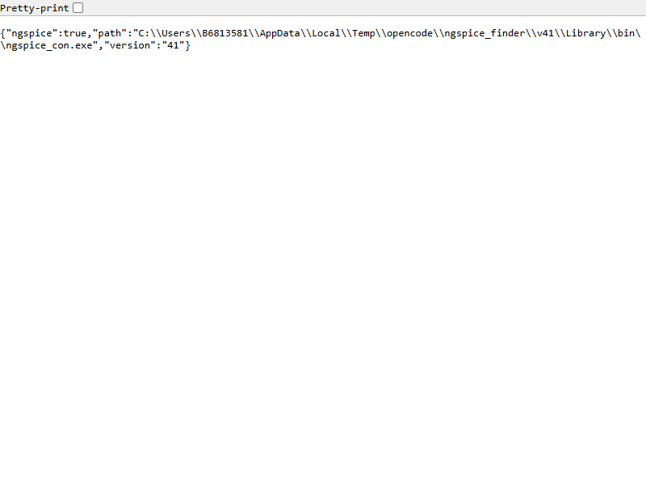
Engine health · /healthngspice true · version 41 · ngspice_con.exe
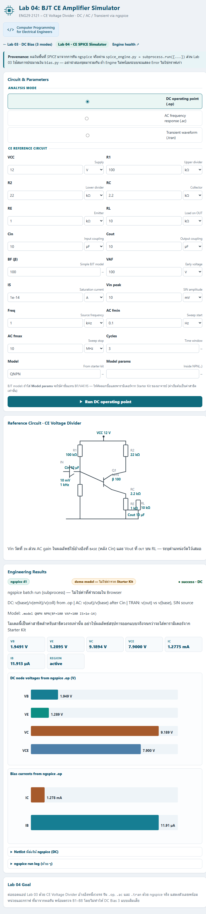
B2 · DC operating point (.op)VB 1.9491 V · VE 1.2895 V · VC 9.1894 V · VCE 7.9000 V · IC 1.2775 mAB3 · เปลี่ยน RE 1 kΩ → 2 kΩVB 2.0482 V · VE 1.4045 V · VCE 9.0646 V · IC 0.6959 mA
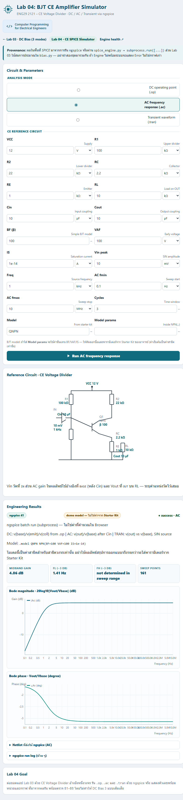
B4 · AC Bode (.ac)Midband 4.86 dB · fL 1.41 Hz · fH not determined · 161 points